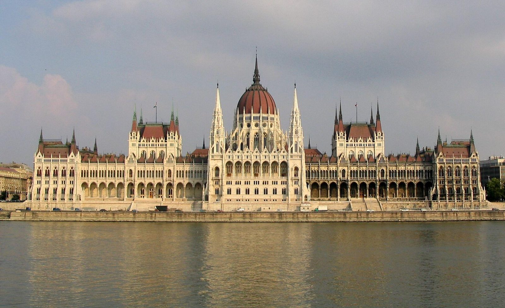
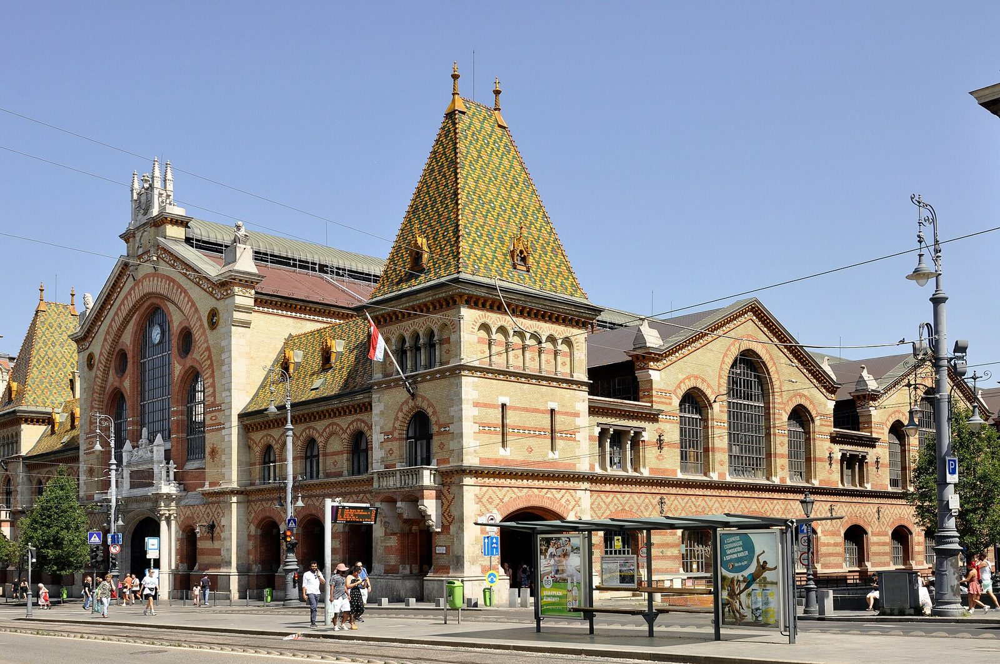
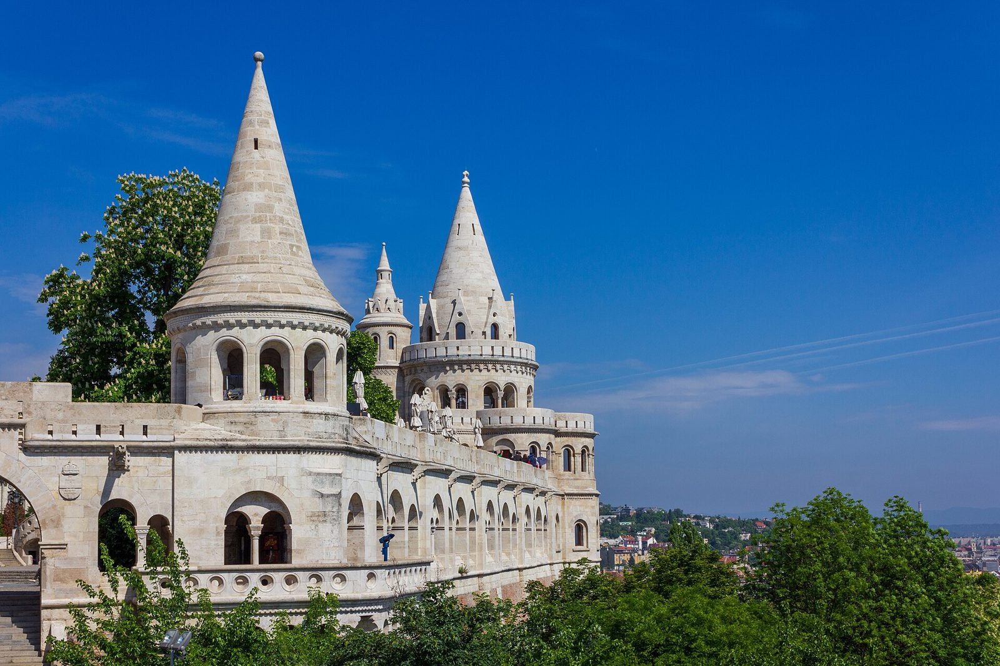
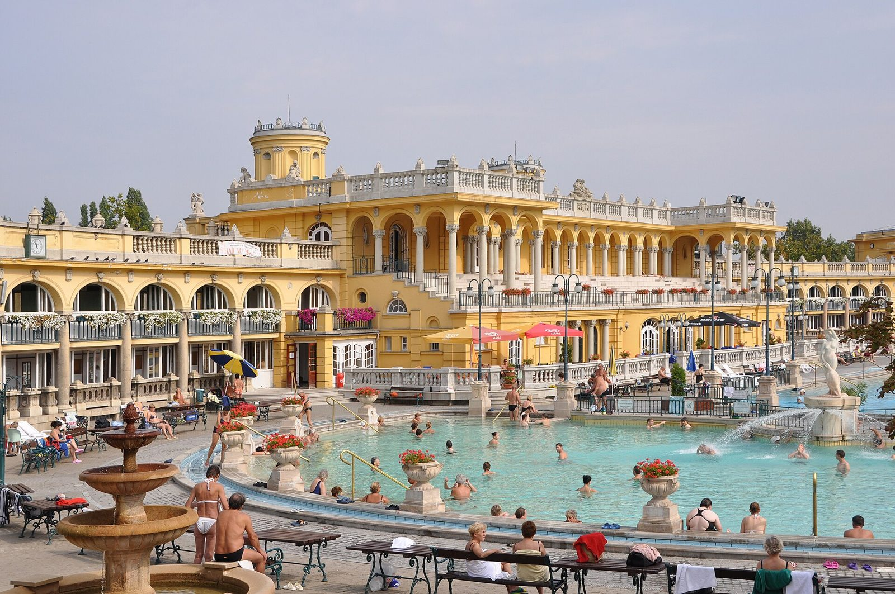

חמישי — ואצי יוצה, ואז Vapiano
היום התחיל בהליכה בואצי יוצה (Váci utca), אחר כך Vapiano, הליכה לשוק המקורה ומשם נסיעה לקניון ארנה. משם חזרה למלון לכוס ערק לימונים.
OSNAT TRAVEL AGENCY
מסלול אישי · סוף שבועהכנסתי למסלול את קניון ארנה (Arena Mall) ליום שבת אחרי המרחצאות, ובחרתי לכם מסעדות מומלצות לכל יום. לשישי בערב מצאתי מסעדה שמתאימה במיוחד למה שביקשתם: דגים שלמים על גריל פחמים, ליד הדנובה ובמרחק הליכה ממזח השיט.
ביום 6.11.2026 עודכן יום חמישי לפי מה שבאמת קרה: הליכה בואצי יוצה (Váci utca), Vapiano, הליכה לשוק המקורה הגדול (Central Market Hall), נסיעה לקניון ארנה, חזרה למלון לכוס ערק לימונים, ואז המסעדה המקסיקנית Todo (טודו). קניון ארנה נשאר גם ביום שבת אחרי המרחצאות.

שישי בערב | המסעדה המומלצת
מסעדה יוונית ים-תיכונית על גדת הדנובה, עם התמחות בדגים, פירות ים ומנות על הגריל.
כתובת: Budapest, Belgrád rkp. 16, 1056 Hungary
כ-15-20 דקות הליכה ממזח Legenda באזור Vigadó tér, לאורך הנהר.
גוגל מפות · Belgrád rkp. 16, 1056 Budapest
לפי dionysos.hu. המחירים עשויים להשתנות.
הדניס והלברק מוגשים ברוטב שמן זית ולימון, לצד סלט וממרח שום.
להזמין שולחן ליום שישי בשעה 20:15, אחרי שיט של 18:40-19:40. המסעדה פתוחה עד חצות, אבל צריך לוודא שיש שולחן פנוי.
טלפון: +36 70 585 8135
עודכן ב-6.11.2026 · מה שקרה בפועל
עודכן ב-6.11.2026 לפי מה שבאמת קרה.

יום שישי
בית הכנסת נסגר ביום שישי בשעה 14:00, עם כניסה אחרונה ב-13:00. מקור: Jegy.hu. עמוד הכרטיסים הרשמי
הפלגת 18:40 מופיעה בלוח הרשמי של Legenda ליום שישי, 6 בנובמבר. יש להזמין ולבדוק זמינות לפני ההגעה. legenda.hu

יום שבת
Arena Mall: Budapest, Kerepesi út 9, 1087 Hungary. קניון גדול עם חנויות אופנה, הנעלה, קוסמטיקה ומותגים בינלאומיים. בשבת החנויות פתוחות 10:00-21:00 לפי האתר הרשמי.
arenamall.hu · גוגל מפות · Kerepesi út 9, 1087 Budapest
למעבר מהמרחצאות לקניון, מומלץ להשתמש במונית או בתחבורה ציבורית.

מסעדות במסלול
היום התחיל בהליכה בואצי יוצה (Váci utca), אחר כך Vapiano, הליכה לשוק המקורה ומשם נסיעה לקניון ארנה. משם חזרה למלון לכוס ערק לימונים.
מסעדה מקסיקנית, אחרי כוס ערק לימונים במלון.
מסעדה הונגרית מסורתית ברחוב Fortuna 3, במיקום נוח ליד מצודת הדייגים.
Open for breakfast, lunch and dinner!
מנות הונגריות גדולות, גולאש, פפריקש ותבשילים מסורתיים, באזור פארק העיר.
מסעדה מעוצבת עם חצר מקורה, אוכל ים-תיכוני ואווירה תוססת. מומלץ להזמין מקום.
Gettó Gulyás לארוחה הונגרית אותנטית ברובע היהודי, או Trattoria Pomo D’Oro לארוחת שישי בסגנון איטלקי, עם אפשרות ללברק על הגריל לשניים. השנייה מרוחקת יותר מהמזח לעומת Dionysos.
יום ראשון
מומלץ לצאת מהמלון בסביבות 06:50 במונית שהוזמנה מראש, במטרה להגיע לשדה התעופה כשלוש שעות לפני ההמראה, בהתאם להנחיות חברת התעופה.
צ׳קליסט
לא אומתתי זמינות בפועל לארבעת ההזמנות. נכון ל-5.11.2026: Dionysos בשישי 20:15, שיט Legenda ב-18:40, מרחצאות סצ׳ני בשבת, ו-Mazel Tov בשבת בערב.